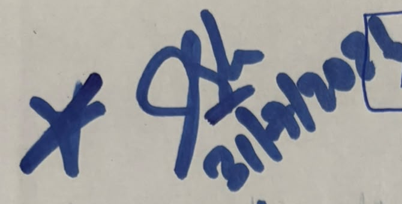
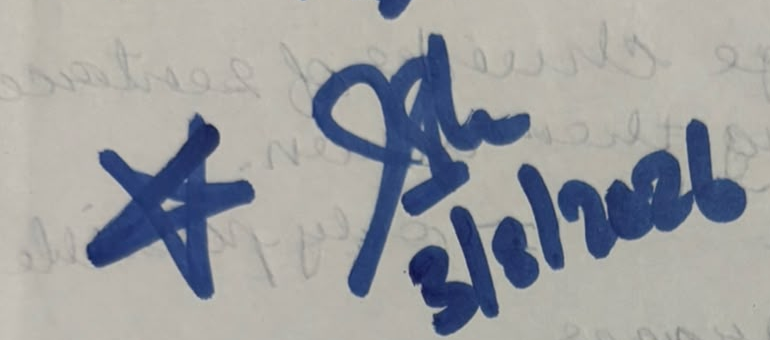
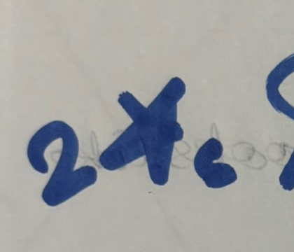
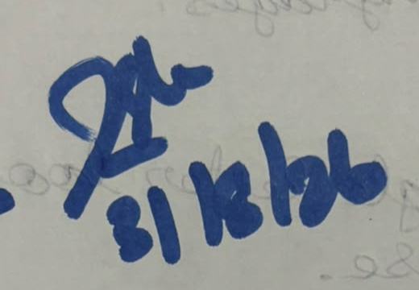
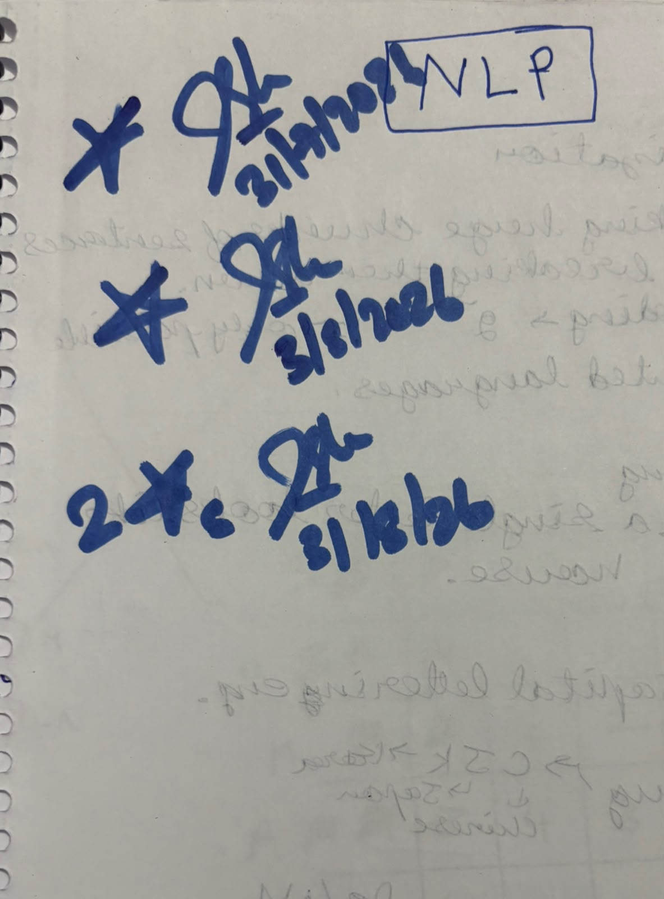
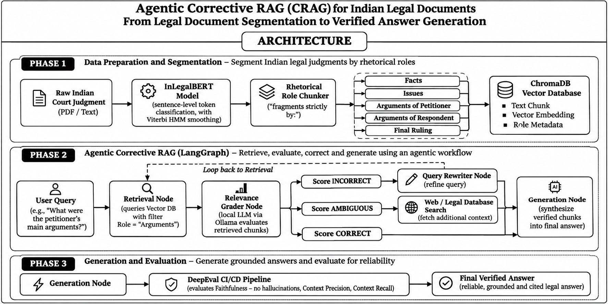
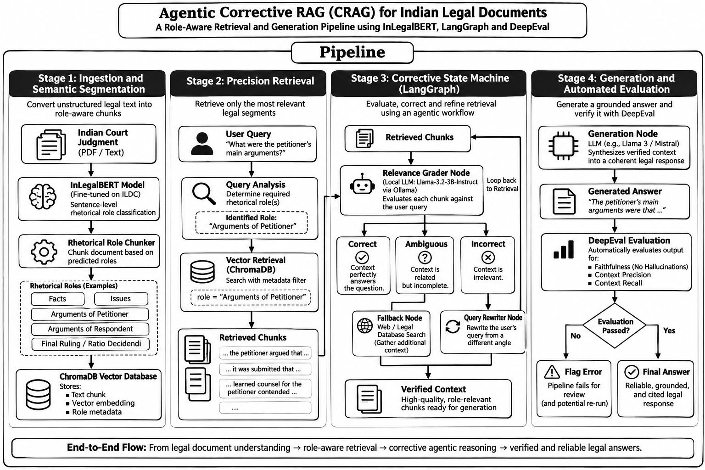
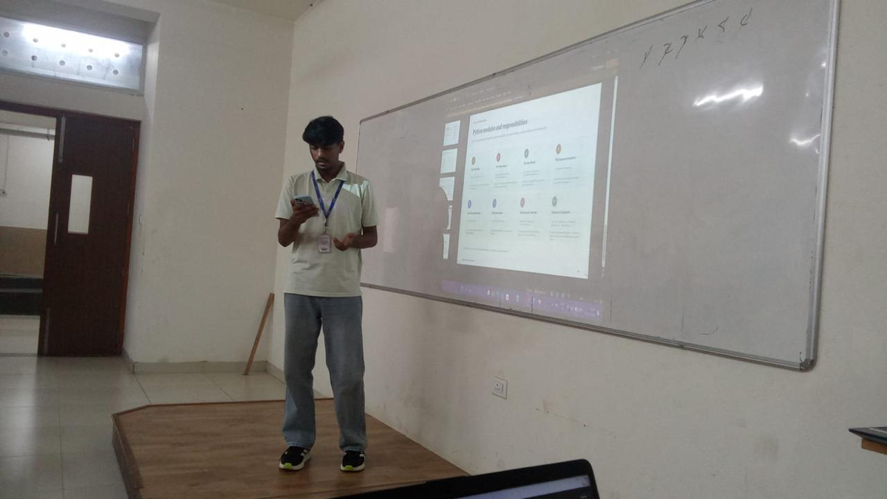

My journey through Natural Language Processing — from text processing and hands-on experiments to classroom activities and an applied legal-AI project.
Explore My NLP Journey ↗My journey through Natural Language Processing — from text processing and hands-on experiments to classroom activities and an applied legal-AI project.
Welcome to my Natural Language Processing portfolio. This space brings together the concepts, practical sessions, classroom activities, and project work I explored during my NLP learning journey. It highlights how I moved from understanding and processing text to applying NLP techniques in real-world problem settings, including legal document understanding and retrieval-augmented generation.
Practical text analysis using NLTK on the Brown Corpus and U.S. Inaugural addresses, tokenization, frequency distributions, word clouds, binary CountVectorizer vocabulary construction, and cosine similarity geometry.
Comparative translation evaluation of ancient Tamil Sangam poetry, Broadway recommendation assistant architecture, cultural state classification concepts, and an in-depth enterprise study of Yellow.ai conversational AI.
Domain-specialized legal intelligence system segmenting Indian Supreme Court & High Court judgments into 7 rhetorical roles using InLegalBERT, Viterbi HMM smoothing, and LangGraph corrective retrieval.
Understanding human language, artificial intelligence, and the knowledge gained throughout the NLP course.
Natural Language Processing (NLP) is a field of Artificial Intelligence that enables computers to work with human language. It helps systems analyse, understand, organize, and generate text so that people can interact with technology using everyday language.
Throughout this subject, I explored how raw text can be transformed into useful information. My learning included working with text corpora, tokenization, lowercasing, stopword and punctuation removal, word-frequency analysis, word clouds, feature extraction, CountVectorizer, document representation, and cosine similarity. I also explored a basic Naive Bayes text-classification exercise and learned how semantic retrieval and Retrieval-Augmented Generation can support more informative responses.
I applied and extended several NLP ideas in my JurisGraph project, which focuses on understanding the rhetorical structure of Indian legal judgments and retrieving role-relevant evidence before generating answers. This helped me connect foundational text-processing concepts with a larger NLP application.
Transforming raw unstructured text streams into normalized discrete tokens through sentence splitting, lowercasing, stopword removal, and vocabulary frequency distributions.
Building bag-of-words document representations with binary CountVectorizer, mapping vocabulary indices, and computing cosine angles between high-dimensional text vectors.
Bridging lexical search with dense vector embeddings (BGE-small), cross-encoder reranking, and self-reflective Corrective RAG loops to ground LLM generation in verifiable evidence.
Practical experiments, coding exercises, NLP concepts, and technical implementations completed during classroom laboratory sessions.
This session introduced practical text analysis using the Natural Language Toolkit (NLTK). I explored text corpora such as the Brown Corpus and the collection of U.S. presidential inaugural addresses. The exercises demonstrated how a text corpus can be loaded, inspected, and analysed programmatically.
I worked with text cleaning steps such as converting text to lowercase, tokenizing words, and removing English stopwords and punctuation. I used frequency-distribution tools to identify common words and displayed the results through a top-word chart. I also generated a word cloud from Barack Obama’s 2009 inaugural address and examined word-frequency patterns across multiple inaugural speeches. The later notebook pages begin work with speech tokenization and NLTK tagging resources.
FreqDist, Counter, word clouds, frequency charts, and speech-text analysis.
This session contained three practical tasks. First, I created a simple feature extractor using the last letter of a name and used the NLTK names corpus to prepare male/female-labelled examples for a Naive Bayes classifier, demonstrating feature extraction in classification workflows.
Second, I used Scikit-learn’s CountVectorizer with binary output to build a vocabulary from two OCR-related text examples, converted new sentences into vector form, and calculated cosine similarity between two text descriptions (yielding approximately 0.8944). Third, I used Python’s urllib to retrieve Project Gutenberg's Crime and Punishment (1,135,213 characters) decoded as UTF-8.
Recognition received for answering questions and actively participating in NLP class.
“I earned four stars as tokens of appreciation for answering questions and actively participating in NLP class. These stars represent my classroom involvement, willingness to share ideas, and consistent engagement with the learning activities.”

🔍 Zoom
🔍 Zoom
🔍 Zoom
🔍 Zoom
The certified course notebook page recording the individual star awards signed and stamped in blue ink by the course instructor across July and August 2026. The records feature the boxed [NLP] course identifier, faculty initials, and the session dates 31/7/2026, 5/8/2026, and 31/8/2026 (double star notation).

🔍 ExpandUnordered collection of practical NLP explorations, translation analyses, concept designs, and classroom exercises.
Comparative evaluation of two English translations of the Sangam poem Purananuru, Poem 192 (“Yaadhum Oore, Yaavarum Kelir”) by Kaniyan Pungundranar. Analyzed G. U. Pope’s traditional rendering versus A. K. Ramanujan’s direct modern translation.
Yielded an exact-word Jaccard similarity of approx 0.18. Human rubric scores (fidelity, fluency, cultural context) are provisional judgments; BLEU, BERTScore, and inter-rater agreement require further computation or evaluator data.
Designed a natural-language assistant concept for The Broadway Map. Instead of manual map browsing, users query in natural dialogue: “I’m visiting New York this weekend. Recommend a musical for my family, preferably a comedy, and show me where the theatre is.”
Integrates Intent Classification, Named Entity Recognition (NER), semantic search, content-based recommendation, and RAG grounded in live show data with conversational tracking.
In this classroom discussion on non-literal language, I presented the idiom “It’s raining cats and dogs outside” to examine how figurative expressions diverge from word-for-word compositionality.
Serves as a pedagogical entry point for exploring idiomaticity, context-dependent embeddings, metaphor detection, and the failure modes of naive literal parsing in NLP.
Explored a proposed machine-learning concept that analyses textual descriptions of Indian states (languages, literature, cuisine, festivals, geography) to classify them into broad North/South regional groupings. Kerala and Punjab served as illustrative examples.
Note: A simplified educational model. Culture is multifaceted; outputs depend on selected features and definitions, not a rigid or definitive classification of cultural identity.
Explored the Chinese Biographical Database (CBDB), a historical knowledge graph documenting ~657,909 individuals across dynastic history. Originating with Robert M. Hartwell (1982) and the Harvard-Yenching Institute.
Built through collaboration with Fairbank Center (Harvard), Academia Sinica, and Peking University. Demonstrates large-scale biographical text mining from digitized historical texts.
Programmed a text vectorization workflow using Scikit-learn’s CountVectorizer(binary=True) to fit a shared vocabulary from OCR-related sentences and transform text into high-dimensional binary term vectors.
Computed cosine similarity between document vectors, establishing an analytical foundation for measuring semantic proximity between unstructured text passages without deep models.
Recorded during the Finite State Automata (FSA) classroom module. A snapshot from my classroom activity notes documenting formal language state transitions, morphological parsing workflows, and automata theory.
A deep dive into an Indian conversational-AI and NLP unicorn — how Natural Language Processing, multilingual AI, and generative systems support enterprise interactions.
This case study examines Yellow.ai as an Indian conversational-AI company applying NLP, machine learning, and generative AI to customer and employee interactions. Traced from its 2016 founding in Bengaluru as Yellow Messenger through its rebranding to Yellow.ai and its expansion from chatbot automation into voice bots, generative AI, and autonomous AI agents.
Proprietary zero-shot NLP engine for intent recognition and slot tagging without weeks of manual training. Interprets contextual requests like “I haven't received my refund yet” directly as refund-status workflows.
Orchestrates requests across proprietary models and external foundation LLMs, routing dynamically based on business constraints of accuracy, latency, and operational cost.
Agent co-pilot providing human customer-service representatives with AI-generated draft responses, real-time contextual summaries, and policy lookup to accelerate resolution times.
Deploys conversational agents seamlessly across WhatsApp, Web widgets, Voice/IVR, Instagram, Facebook Messenger, Slack, and Microsoft Teams. Features robust tokenization and understanding for Indian languages including Hindi, Tamil, Telugu, Bengali, and Marathi, alongside global languages.
Cited use cases include AirAsia (internal employee knowledge automation), Lulu Hypermarket (customer support automation), and Lion Parcel (shipment tracking over WhatsApp). Additional enterprise clients cited: Sony, Domino’s, Sephora, Hyundai, and Škoda.
The submitted case study reports an estimated Annual Recurring Revenue (ARR) of approximately $80 million USD and unicorn valuation metrics achieved during rapid enterprise expansion. Academic note: These figures are cited directly from the submitted assignment report and its bibliography, reflecting industry claims and estimates at submission time rather than independently verified real-time financial audits.
Agentic Corrective Retrieval-Augmented Generation for Indian Legal Documents with Rhetorical Role Segmentation.
Academic note: JurisGraph is an academic NLP project developed for educational research and is not a substitute for professional legal advice.
Conventional RAG splits long Indian Supreme Court and High Court judgments into arbitrary fixed-size chunk windows (e.g. 500 tokens). This breaks discourse coherence and mixes opposing claims—confusing petitioner arguments with judicial reasoning or final decisions. As a result, standard LLMs hallucinate or misattribute legal arguments.
JurisGraph classifies each sentence into one of seven canonical rhetorical roles using fine-tuned InLegalBERT, applies log-space Viterbi HMM sequence smoothing to restore document-level coherence, creates role-aware chunk boundaries in ChromaDB, and uses LangGraph corrective self-reflection to verify citations before releasing answers.
Case background, timeline, events, and evidence.
Legal questions framed for judicial determination.
Submissions by petitioner / appellant counsel.
Submissions by respondent / defense counsel.
Judicial rationale, analysis, and precedents.
Final operative ruling, order, and relief.
Metadata, header, footer, citations, boilerplate.

🔍 Click to EnlargeFigure 1: JurisGraph system architecture: document segmentation and indexing, agentic corrective retrieval, and generation/evaluation.

🔍 Click to EnlargeFigure 2: End-to-end pipeline: ingestion and semantic segmentation, precision retrieval, corrective LangGraph workflow, and generation with automated evaluation.

🔍 Expand PhotoZaheer SK presenting the JurisGraph architecture, rhetorical role segmentation benchmark results, and live Streamlit inference execution before faculty and peers in the classroom defense.
JurisGraph formal project defense slide deck: problem statement, dual-branch architecture, prompt discipline, pipeline execution, and benchmark evaluation.
Complete 10-slide master defense deck presented before the NLP evaluation panel. Contains full architectural diagrams, prompt contracts, and experimental evaluation tables.
JurisGraph: Agentic Corrective RAG for Indian Legal Documents with Rhetorical Role Segmentation. Author: Zaheer SK, Spurthi Katoker, Monica S.
Why standard chunking fails on legal discourse: fixed token windows collapse argument boundaries and mix petitioner submissions with judicial orders.
Branch A: Ingestion, InLegalBERT sentence classification, Viterbi HMM smoothing, ChromaDB storage. Branch B: Query routing, LangGraph CRAG loop.
Compact stack built on Python 3.11, PyTorch, InLegalBERT, BGE-small, ChromaDB, ms-marco MiniLM, LangGraph, and Ollama llama3.2:3b.
LegalSeg (7,120 judgments, 1.49M sentences, 7 roles), InLegalBERT pretraining corpus (5.4M judgments 1950–2019), and curated 30-query benchmark.
Query Router / Role Mapper, Relevance Grader, Query Rewriter, and Grounded Generator with mandatory citation brackets and strict abstention.
Step-by-step trace from PDF text extraction through rhetorical classification, Viterbi smoothing, hybrid retrieval, cross-encoding, and verification.
57.52% Test Macro F1 (+7.36% gain from Viterbi smoothing), 74.2% reduction in chunk fragmentation, 100% abstention on unanswerable queries.
Engineered for appellate advocates, judicial law clerks, legal compliance officers, law faculty, and academic NLP researchers.
Indian Kanoon, Supreme Court Judgment Information System, LegalSeg benchmark references, and LangGraph multi-agent RAG foundations.
Interactive walkthrough of the JurisGraph Streamlit application, live execution pipeline, and official GitHub repository.
This walkthrough video demonstrates the JurisGraph Streamlit application in operation. The recording shows document ingestion of an Indian court judgment (sample3.pdf), rhetorical role classification into 7 canonical roles with InLegalBERT and Viterbi sequence smoothing, ChromaDB vector indexing, and the live pipeline execution trace displaying decision nodes (map_role_node, retrieve_node, grade_node, generate_node) with precise wall-clock latencies. It illustrates role-filtered retrieval, cross-encoder reranking, and citation-grounded response generation using a local llama3.2:3b model with built-in abstention for unanswerable queries.
Key takeaways, skills gained, challenges faced, and my overall learning experience in NLP.
Deep dive into tokenization, linguistics, language models, and text processing fundamentals.
Practical implementations from scratch: TF-IDF, N-grams, Word2Vec, Seq2Seq, and Transformer architectures.
Real-world case study on Indian legal document segmentation and enterprise conversational systems.
Building JurisGraph — Graph-based retrieval augmented generation with corrective validation for legal judgments.
Synthesis of theoretical linguistics and production-grade NLP engineering.
From n-grams and classical linguistics to self-attention and modern LLMs. Deep conceptual understanding of representation learning.
Graph retrieval, vector embeddings, re-ranking, and hallucination reduction in production workflows.
Structuring and segmenting complex Indian legal documents using corrective retrieval patterns.
My NLP learning journey helped me understand how computers can process and work with human language. I began with foundational tasks such as exploring text corpora, tokenizing text, removing stopwords, studying word frequencies, and converting text into numerical representations. The hands-on exercises helped me see how these techniques work in Python through NLTK and Scikit-learn.
The classroom activities expanded my understanding of how NLP can be applied to different domains, including translation comparison, recommendation systems, cultural text analysis, historical databases, and document similarity. Working on JurisGraph helped me connect these foundations to a larger application involving legal document segmentation, role-aware retrieval, corrective workflows, and grounded answer generation.
Overall, this subject strengthened my practical understanding of text processing, feature extraction, classification, semantic retrieval, and applied NLP system design. It also showed me the importance of evaluating outputs carefully and grounding generated responses in reliable evidence.
"Language is the ultimate mirror of human cognition. Engineering systems that comprehend it requires not just algorithms, but respect for its inherent nuance."